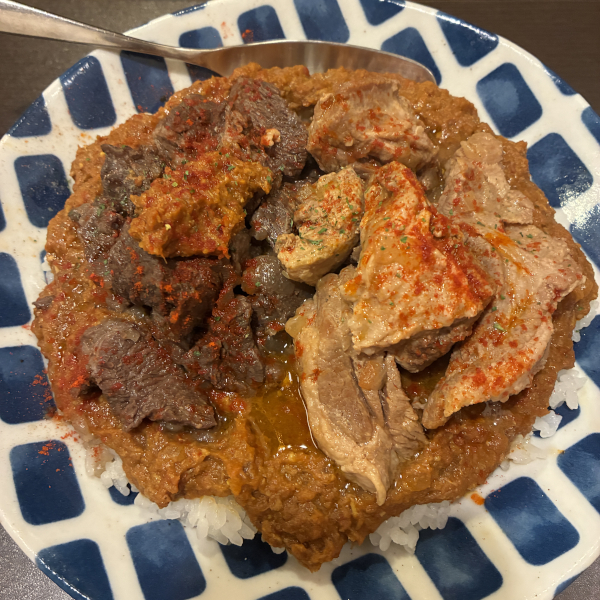
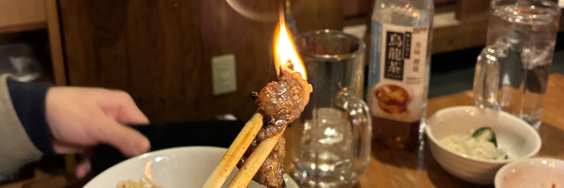
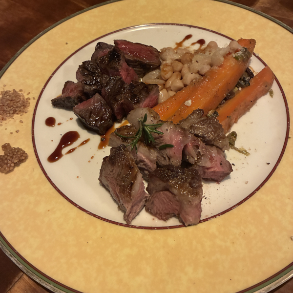
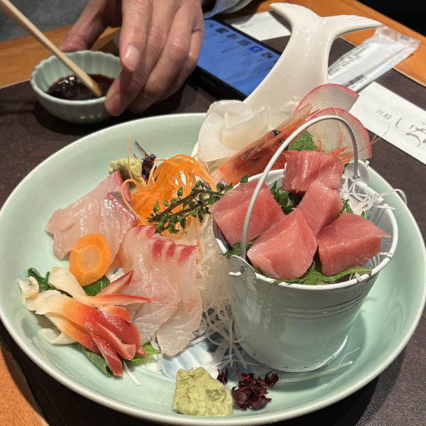

馬肉と鹿肉のカレー

池袋西口の「火星カレー」で食べた馬肉と鹿肉のカレーです。結構有名なお店だそうですが、席はあまり多くないです。この店には、牛肉、豚肉、鶏肉、アヒル肉、羊肉、馬肉、鹿肉、オーストリッチ肉などがあります。せっかくなので、馬肉と鹿肉のカレーを注文しました。味は悪くなかったですが、少し臭みがありました。人間が牛肉、豚肉、鶏肉をよく食べるのには、たぶん理由があるのだと思います。


池袋西口の「火星カレー」で食べた馬肉と鹿肉のカレーです。結構有名なお店だそうですが、席はあまり多くないです。この店には、牛肉、豚肉、鶏肉、アヒル肉、羊肉、馬肉、鹿肉、オーストリッチ肉などがあります。せっかくなので、馬肉と鹿肉のカレーを注文しました。味は悪くなかったですが、少し臭みがありました。人間が牛肉、豚肉、鶏肉をよく食べるのには、たぶん理由があるのだと思います。

板橋のイタリアンレストランで食べた牛肉と豚肉の盛り合わせです。友達と一緒に食べました。肉は美味しかったです。イタリアンといっても、味は普通の焼肉とあまり違いがありません。お店は店長さん一人で切り盛りしていたので、待ち時間が少し長かったです。ちなみに、牛肉はちょっと噛みにくかったです。

川越の鰻屋で両親と一緒に食べた刺身の盛り合わせです。刺身は結構新鮮で、美味しかったです。鰻の店なのに、なぜ鰻ではなく刺身を食べたのかというと、鰻はもう食べ終わっていたからです。鰻は結構脂っこいので、食べた後に刺身を食べるのはいいと思います。